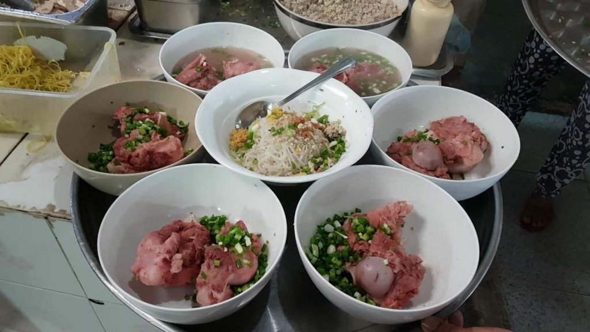
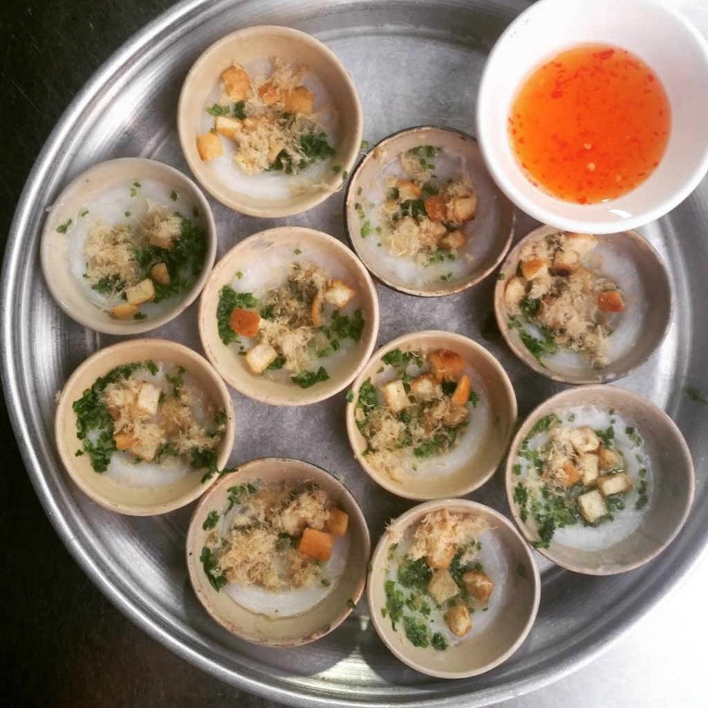

Bánh kem

Yêu thích nét thơ mộng nơi đây.
Cơm cháy mang thương hiệu Rụm từ lâu đã trở thành một món ăn vặt quen thuộc với mọi người, mọi nhà. Chính nhờ hương vị giòn thơm của cơm cháy. Hay vị đậm đà của chà bông, cộng thêm chút béo ngậy của mỡ hành. Chắc chắn sẽ làm cho các bạn bị nghiện lúc nào mà chẳng hay. Món cơm cháy đặc biệt này cũng được người Sài thành dùng như một món ăn. Hay đơn giản là lót dạ vào bữa sáng vào những ngày bận rộn.
Cơm cháy
Hương Vị Việt không chỉ là tên gọi, đó còn là định hướng và mong muốn của tiệm bánh kem nổi tiếng này. Đến đây, khách hàng như chìm đắm trong không gian của màu sắc và hương thơm ngọt ngào. Với đa dạng mẫu mã, bạn có thể tha hồ lựa chọn kiểu bánh phù hợp từ bánh vuông, tròn, trái tim…
Bánh kem
Hủ tiếu gõ là món ăn được nhiều sinh viên, người lao động, nhân viên văn phòng,… ưu thích bởi giá tiền phải chăng món ăn cũng nhanh chóng và đa dạng. Thông thường thì hủ tiếu gõ sẽ ăn với chả và trứng thêm vài ba lát thịt, sang hơn thì có hủ tiếu xương, hủ tiếu giò,… Nhưng dù là đơn giản hay cầu kì thì món này đều đem lại vị ngon ngọt nước riêng của nó.
Hủ tiếu gõ
Bánh bèo là một món bánh rất thịnh hành ở miền Trung, ngoài ra cũng có nhiều ở miền Nam Việt Nam. Bánh bèo gồm có ba phần chính là bánh làm từ bột gạo, nhân để rắc lên bánh làm bằng tôm xay nhuyễn, và nước chấm, một hỗn hợp mà nước mắm là thành phần chính và thường đổ trực tiếp vào bánh chứ không cần chấm. Thường có hai cách bày trí là được xếp theo vòng tròn trên dĩa hoặc ăn trực tiếp trong chén. Giá món này cũng rất phải chăng tùy theo lượng ăn của mình bạn có thể kêu số bánh phù hợp.
Bánh bèo
